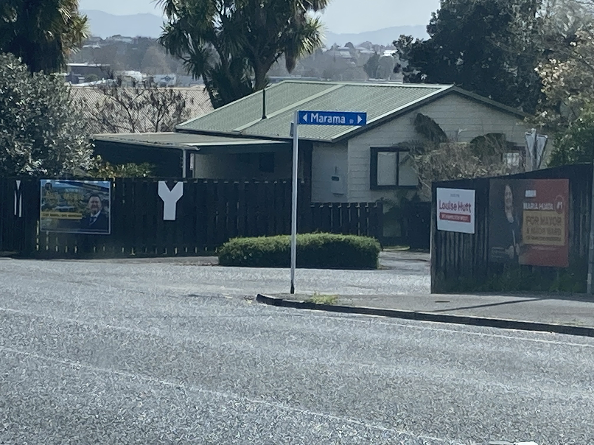

Postal voting • Rank candidates (STV) • Open: Tue 9 Sep • Closes: Sat 11 Oct 12 pm • Return to any orange vote box or postbox.

Campaign signs at Marama Street corner
Bio & Endorsements
Short Bio (50 words)
Roderick J. Young is a hands‑on community advocate focused on fair rates, safer streets, and growth that pays its way.
He brings practical budgeting and a do‑the‑work ethic—getting small things fixed so the big things add up.
Bio (120 words)
Roderick has deep roots in Hamilton West—from Frankton to Dinsdale and Nawton. He’s worked alongside clubs, small
businesses, and neighbours to solve everyday problems: safety hotspots, maintenance backlogs, and confusing council
processes. His focus is simple: keep rates fair, publish clear numbers, and make growth pay its way so existing
ratepayers aren’t left carrying the can. He’ll front up monthly with neighbourhood surgeries and post every vote
and reason within 48 hours.
Endorsements
“Straight talker, shows up, and gets things fixed.”
“We asked for a safer crossing by walking track—he pushed until the paint was on the road.”
“Clear about the books and where rate money goes.”
Want to add your endorsement? Send a short quote to the email roderickjy@gmail.com :Pledge rank, :Volunteer, :Host a street meeting, :Request yard sign
If your #1 is X, make me your #2 or #3 so your vote still helps Hamilton
Rank Roderick J. Young #1–#3 for the West Ward. No voting pack? Special vote. Postal voting opens 9th September and closes
mid day 11 October. Learn about STV on the How to Vote page.
HCC Council
If your #1 is X, make me your #2 or #3 so your vote still helps Hamilton
Housing New Residents Without Punishing the Rest. 2023 Approximately 183,000 residents,
2028 Approximately 194,400 residents,
2033 Approximately 205,400 residents
Authorised by Roderick J. Young — contact: roderickjy@gmail.com — Hamilton.
📈 The Challenge – and the Opportunity
Hamilton is projected to grow by 30,000 people by 2030. To manage this surge, we must plan smartly — protecting our communities, our environment, and our local budgets.
🚫 The Problem with Urban Sprawl
Urban sprawl inflates costs for roads, pipes, and services — pushing rates onto existing residents. That’s not fair. Build Forward proposes a 95% infill, 5% sprawl strategy.
Build up, not out
Retrofit and intensify underused properties
Enable rooftop tents and backyard dwellings as safe, transitional housing
Fast-track multi-family units, co-housing and townhouses
🏨 From Roof Tents to Hotels
We need a flexible housing ladder:
Rooftop tents and short-term backyard cabins
Legalised garage conversions and granny flats
Mid-rise apartments near transit
2–3 new hotels for visitors and professionals
🧓 Protecting Ratepayers on Fixed Incomes
Our long-term ratepayers shouldn’t be squeezed to fund growth. We can shift the burden:
💰 Bank Interest = Local Rates
If an overseas bank collects $100,000 in interest per year from a Hamilton mortgage, then $4,000 of that should support our city.
This ensures fair contributions without raising rates on pensioners, single parents, or wage earners.
🏗️ Smart Growth Funding
Introduce a Financial Transaction Levy on overseas mortgage profits
Offer half-price LIM reports to stimulate safe sales and smart subdivisions
Maintain a Rates Cap for fixed-income households
Embed co-governance and local values in infrastructure decisions
🔍 Summary Table
Strategy
Outcome
95% Infill, 5% Sprawl
Limits infrastructure costs
Flexible Housing (Tents to Hotels)
Inclusive growth and housing access
Bank Rate Sharing
Protects fixed-income residents
Financial Transaction Levy
Revenue without local hardship
Half-Price LIM Reports
Faster, safer property transactions
📬 Join the Conversation
Let’s build a Hamilton where newcomers are welcomed — and our elders are respected.
Vote Roderick J. Young for Hamilton West – Build Forward.
Notes from the Hamilton West Residents & Ratepayers Forum
Notes from the Hamilton West Residents & Ratepayers Forum
By Roderick J. Young, Independent Candidate – Hamilton West
Nine of us stood up last night, 27th August 2025, out of the 16 candidates running for six West Ward seats. That fact alone was telling:
fewer than two-thirds turned up, but it was enough to give the audience a flavour of the race and the different paths
Hamilton might take.
I spoke second, and my 180 seconds went quickly. I decided to use the time to explain STV — the Single Transferable Vote system — which confuses many voters. I kept it simple:
Imagine 12 mayoral candidates, each starting with about 8% on the first preference.
By the second preference, four candidates pick up more votes.
At the third, it narrows further.
By the fourth, one candidate has the numbers and is elected.
It landed well. Tony, from Residents and Ratepayers, later said he had been waiting months for a plain explanation from staff.
My sense is the room appreciated someone taking the time to translate technical detail into everyday language.
Who Stood Out
The night had its winners. Mesh earned respect for speaking clearly to the audience’s concerns. Too many others leaned on accountant-style jargon,
facts piled on facts until people tuned out. 3 candidates trying to out-number each other with financial spreadsheets didn’t shift the mood.
Sarah and Emma both spoke strongly. Emma made a point that resonated: half of Hamilton’s population is under 30.
Roderick J Young's idea that each councillor should appoint six youth advisors — three male, three female, across English, te reo Māori,
and New Zealand Sign Language — felt fresh and practical.
Sarah took issue with claims that 25% of rates are going to debt interest, saying it’s closer to 13%.
But she also defended more billion-dollar spending on the Pukete wastewater treatment plant.
That’s a hard sell in a city already carrying $1.3 billion in debt, costing households over $1,000 a year in interest payments alone.
Leadership Questions
Tim was asked about the CEO’s five-year contract. He declined to answer from the back of the hall, saying it wasn’t appropriate.
Later he also pushed back against a suggestion that the CEO be paid less than the Mayor — I had argued for councillors and leadership
to set the example by tightening pay. Tim cut in, saying bluntly:
“It cannot be done.”
That moment drew a reaction; the room could sense the division between councillors who defend the status quo and those of us asking for change.
Cameras and Conversations
There was even drama around the recording of the event. The official videographer packed up mid-session. A woman who arrived late began filming on her phone,
later asking Tony if her footage could be entered into the official record because “it was so interesting.” It shows the hunger in the community
for transparency and open records.
After the official close, five of us stayed behind, talking with residents for another 20 minutes. It grew colder, and rain was forecast for the next four days,
but people lingered — proof that Hamiltonians want more than speeches; they want conversations.
The Reality Beneath the Debate
As I listened to my fellow candidates, I kept thinking about the bigger picture:
Debt: Hamilton’s $1.3 billion burden is among the highest in New Zealand per capita.
Growth: Our population has passed 185,000 and is rising faster than any other metro, heading to 200,000 by 2030.
Youth: Half of us are under 30 — Hamilton is a young city, with a median age of just 32 compared to the national 37.
Infrastructure: The Pukete upgrade alone is expected to run over $600 million, on top of Peacocke and other growth-linked borrowing.
Trust: Council’s own surveys show confidence in decision-making has dropped below 25%.
These aren’t abstract numbers. They shape whether families can afford their rates, whether young people see a future here,
whether small businesses thrive, and whether Hamilton’s money stays in Hamilton — or keeps leaking offshore.
Closing Thoughts
From my notes, two things stand out. First, Hamilton voters are desperate for clarity. They want the fog of jargon lifted so they can judge for themselves.
Second, they want leadership that looks beyond short-term fixes and begins building long-term resilience.
The forum ended with no clear “winner” — but for me, the most important outcome was the energy in the room.
Ratepayers are paying attention, asking sharper questions, and demanding answers. That is a healthy sign for democracy in our city.
From the West, the campaign goes on.
Roderick J. Young #1, #2, #3, or #4
Roderick J. Young #1, #2, #3, or #4
The Two Councils of Kirikiriroa — A Play
The Two Councils of Kirikiriroa
Roderick J. Young #1, #2, #3, or #4
STV in Hamilton West Example
How STV Works: Hamilton West Example
Let's walk through how STV (Single Transferable Vote) would work in your Hamilton West example with 16 candidates competing for 6 seats and only 100 voters.
1. The Quota
STV uses the Droop quota formula:
Quota = ⌊ Total Valid Votes / (Seats + 1) ⌋ + 1
Here:
Total valid votes = 100
Seats = 6
So:
Quota = ⌊ 100 / 7 ⌋ + 1 = ⌊ 14.28 ⌋ + 1 = 15
👉So, a candidate needs 15 votes to be elected.
2. First Preferences
All 100 voters rank the 16 candidates.
First preferences are counted.
Any candidate with 15 or more first-choice votes is immediately elected.
3. Surplus Transfers
If a candidate has more than 15 votes (say 20), the surplus (5 votes) is redistributed to the next preferences of those 20 ballots.
Redistribution is done proportionally: each of the 20 ballots transfers at a fraction of its value (5 ÷ 20 = 0.25 of a vote each).
4. Eliminations
If after surpluses are transferred, fewer than 6 candidates have reached quota, the candidate with the fewest votes is eliminated.
Their ballots are transferred to the next preference still in the race.
This process repeats (surpluses redistributed, lowest eliminated) until 6 candidates have reached the quota.
5. Small Numbers Effect
Because only 100 people are voting:
The quota is low (15 votes), so a well-organised campaign could secure a seat with the support of just 15% of voters.
With 16 candidates, it’s very likely many will be eliminated early because they’ll get only 1–4 votes.
Preferences become crucial — if your supporters rank you 1st but also give good 2nd and 3rd preferences, you stay in the count longer.
6. Example Outcome (Illustrative Only)
Suppose candidates A, B, and C each get 20 votes. They’re all elected (with surplus transferred).
Candidates D and E get 16 and 15 votes — also elected.
Now 5 seats are filled.
The remaining 11 candidates share 29 votes. The weakest are eliminated until one last candidate passes quota.
✅ Bottom line: In Hamilton West with 100 voters, 16 candidates, and 6 seats, the winning threshold is 15 votes. Success depends not just on first preferences but on building broad support through lower-order rankings, since eliminated candidates’ votes can decide the final seat.
The Droop Quota of Kirikiriroa
The Droop Quota of Kirikiriroa
A civic comedy in one act, blending Shakespearean flourish with Billy T James’ cheek.
Dramatis Personae
CHORUS OF KIRIKIRIROA – the Waikato River, flowing and knowing.
BILLY THE JESTER – A Billy T James–style MC, cheeky and musical.
RETURNING OFFICER – solemn clerk with scrolls, loves rules.
A, B, C, D – funnel candidates, hopeful and scheming.
E–L – the other eight, loud but short-lived.
NANA RATEPAYER – guardian of wallets, quick to heckle.
THE QUOTA – a ghostly figure, always “51”.
Scene I – At the Counting Hall
[Enter CHORUS OF KIRIKIRIROA, flowing robes like blue water.]
CHORUS:
Hear now the tale of ballots cast,
Of twelve who sought the mayoral crown.
A hundred voices, small yet vast,
And only one to wear the gown.
Scene II – The First Preferences
[Enter BILLY THE JESTER with guitar, strums a cheeky riff.]
BILLY:
Kia ora whānau! Hundred folks showed up,
Dropped their ticks like coins in the pub.
Each fella gets eight, nine, maybe ten —
Not enough! Quota says: “Try again.”
[RETURNING OFFICER unrolls scroll.]
RETURNING OFFICER:
The quota be fifty-one!
No soul yet crown’d, the count goes on.
[E–L strut, puffed up.]
E–L (together):
Eight votes apiece, we’re doing fine!
BILLY (aside, to audience):
Yeah, fine like a waka with a hole in the line…
Scene III – The Funnel Awakens
[As E–L are struck out, their votes fly like ghostly ballots to A, B, C, D.]
CHORUS:
One by one the weak are slain,
Their second loves must take the gain.
See now A, B, C, D grow,
Fed by rivers from below.
[A swells in stature.]
A:
From humble nine I rise to three-and-thirty!
A funnel bless’d, my basket never empty.
B:
I too climb, yet lag behind.
C & D:
We taste the quota, but our fate’s unkind.
Scene IV – Eliminations Tighten
[D is eliminated; scrolls vanish to A and B.]
RETURNING OFFICER:
D is gone, their sev’nt’n votes away,
Flow unto A and B, as rivers stray.
BILLY (grins):
That’s politics, eh? One day you’re in,
Next day you’re the kai for your cousin’s win.
[C too is felled, sending his votes down the funnel.]
A (towering):
Lo! I am fill’d, beyond the measure,
Fifty-six souls proclaim their treasure.
Scene V – The Quota Crowned
[Enter THE QUOTA, glowing with the number 51 across chest.]
THE QUOTA:
Thou hast surpass’d me, Candidate A.
The mayoral chair is thine this day.
CHORUS:
So through the funnel, narrow, neat,
The river carried one to seat.
Though many stood, though loud they cried,
Transfers crown’d the one supplied.
Epilogue – Billy’s Send-off
BILLY:
And that’s the moral, folks, don’t moan —
It’s not just your first tick that wins the throne.
In Kirikiriroa, the trick is plain:
Keep ranking the boxes, aye, all the way down the chain.
[He strums a final cheeky waiata riff.]
BILLY (sings):
From twelve down to one, the quota did run,
Fifty-one votes and the mayor’s job’s done!
A Most Bold Endeavour: The Ballad of Bank Hamilton
A Most Bold Endeavour
The Ballad of Bank Hamilton
By Roderick J Young
In the style of William Shakespeare & Billy T. James
🎭 Dramatis Personae
RODERICK J YOUNG, Entrepreneur and Visionary
MAYOR GRUFFTON, a stubborn yet crafty politician
LADY LEDGER, Mistress of Capital and Numbers
SIR LOANALOT, Keeper of Rateable Properties
THE 52, a chorus of Candidates
MANA MĀORI, Spirit of the Land and Voice of the People
THE BANK, an enigmatic masked figure
Act I – The Reckoning of Rates
Scene: The Council Chambers of Hamilton.
RODERICK
Friends, Romans, Hamiltonians — lend me thy rates!
For I have seen the ledger long in red,
And dreamt a dream: of ten billion, bold,
To birth a bank in steel and stone — Bank Hamilton!
MAYOR GRUFFTON (aside)
He speaks in riddles, lofty, bold and mad.
Yet madmen oft bring gold. Let him proceed.
LADY LEDGER
Yet numbers be no poetry, dear friends.
What yield, what risk, what rate of fair return?
SIR LOANALOT
Aye, but those lands — those homes, those shops, those cows —
They back the debt with stone and sheep and steel!
MANA MĀORI
Forget not who did walk this land before.
Let not your greed uproot the earth once more.
Act II – The 52 Arise
Scene: Outside the Council. Candidates gather.
CHORUS OF THE 52: We shall lead, we shall build, we shall fix the pipes!
We shall pave the roads with golden fees!
Give us the Bank, we’ll name it after Nan!
Debt free? Too easy. We’ll do it in ten!
CANDIDATE 17
I’ll sell naming rights to the moon!
CANDIDATE 9
I’ve got a cousin in Dubai — interest-free loans, bro!
CANDIDATE 44
What if we just ask the rich to pay, ay?
RODERICK
Here stands my test — not gold, nor stone, but minds.
Who among these shall walk the fire with me?
Act III – The Ghost of Fiscal Future
Scene: Night. RODERICK alone with ledger. THE BANK appears.
THE BANK
I am the debt thou seek’st to bind.
A beast of cities, silent, cold, and blind.
RODERICK
Then let them turn. I turn no cheek to fate.
I'll rise each morn and wrestle thee again.
Act IV – The Debate of Doom
Scene: Town Hall Debate. Tension high.
LADY LEDGER
He seeks to lend to Hamilton, from Hamilton!
But whence comes the deposit base?
RODERICK
From trust. From vision. From our own damn pockets!
MAYOR GRUFFTON
Canst thou truly fund ten billion so?
Or doth thou sell a dream, half-baked and lean?
RODERICK
Here! The funders, signèd bold.
Private equity, sovereign coin, Kiwi wealth untold.
MANA MĀORI
Heed the whenua, the trees, the streams.
Let not your Bank steal others’ dreams.
Act V – The Founding
Scene: Council Chambers. The vote is passed.
MAYOR GRUFFTON
The vote is cast. The plan approved.
Let Hamilton be home to its own bank,
And debt — begone in thirteen brave years.
RODERICK
So let it be writ. So let it be done.
No foreign coin shall rule our sun.
With care, with craft, with citizens bold —
We turn this tale from lead to gold.
CHORUS OF THE 52: We are thy stewards. Show us the way.
THE BANK
The system is ourselves — now go, and build!
Epilogue – (Billy T James Style)
RODERICK
Chur, bros and bro-ettes. You reckon that was full-on?
All I’m saying is — why rent the future when you can own it, eh?
Now let’s get this debt sorted, Hamilton.
And if anyone’s got a billion in the glovebox, I’ll shout the first round.
Common Sense – Practical, Humane Policy Agenda
Common Sense – Practical, Humane Policy Agenda
Common Sense presents a practical, humane policy agenda to address rates hardship, access to essential services, and transparent governance. This agenda reflects the mates’ demands for policies with a heartbeat, grounded in fairness, accessibility, and accountability.
1. Rates Postponement for Hardship Fairness
Objective
Enable cash-poor, house-rich residents (e.g., elderly homeowners) to defer rates without financial distress, preserving homeownership while ensuring council revenue.
Policy Components
Eligibility: Homeowners with rates bills exceeding 10% of household income qualify for postponement. Priority for seniors, pensioners, and low-income households.
Mechanism: Deferred rates accrue as a statutory charge on the property title, payable upon sale or transfer. Interest capped at a transparent, market-aligned rate (e.g., 1% above inflation, reviewed annually).
Outreach: Automatic screening triggers a plain-English letter offering postponement when rates exceed 10% of income. Includes clear terms and a contact for support.
Review: Annual reassessment of eligibility to ensure fairness and prevent surprises.
Metrics:
Track applications, approvals, arrears reduction, and forced sales avoided.
Implementation
Codify in council bylaws within 6 months.
Allocate budget for outreach staff (2 FTEs) and system updates.
Publish quarterly stats on postponements granted and financial impact.
Ensure job-seekers and residents can access essential document services (photocopying, scanning, emailing) without bureaucratic barriers, supporting employment and opportunity.
Policy Components
Access Tiers:
Members: Standard library cardholders pay a nominal fee (e.g., $0.20/copy, $0.50/scan).
Visitors: Non-cardholders access machines with coin or tap-to-pay options.
Hardship: Free emergency copies/scans for job-seekers or urgent cases (e.g., applications due same day), verified by staff discretion.
Manager Override: Authorize frontline staff to approve one-off free services in urgent cases (decision logged, 10-second process).
Infrastructure: Install pay-per-use kiosks in libraries, community centers, and agencies like WINZ. Ensure at least one functional machine per site.
Outcome Log: Track usage (copies/scans issued, hardship cases) and link to outcomes (e.g., job applications submitted, interviews secured).
Implementation
Roll out kiosks in 10 key locations within 12 months.
Train staff on override protocols and log system.
Budget for kiosk maintenance and voucher program ($50,000/year).
Report annually on usage and employment outcomes.
3. Responsive Governance Service Standard
Objective
Ensure council candidates and staff respond to public queries promptly and substantively, eliminating “didn’t hear the question” excuses.
Policy Components
Response Standard: All public queries (rates, services, policy) receive a substantive reply within 48 hours. Responses must address the question, offer solutions, or explain why not with alternatives.
Written Clarity: Hardship policies (e.g., rates postponement) summarized in one-page, plain-English documents. Maximum two pages, like a pavlova recipe.
Accountability: Candidates or officials who fail to respond or dodge questions must issue a public correction and answer in writing.
Implementation
Update council service standards within 3 months.
Train staff on response protocols; include in performance reviews.
Monitor compliance via public feedback portal.
4. Public Dashboards for Transparency Open Data
Objective
Build trust by publishing clear, regular data on hardship relief, service access, and policy outcomes.
Policy Components
Metrics Tracked:
Rates postponements: applications, approvals, total deferred, arrears reduced.
Council responsiveness: query volume, response times, resolution rates.
Frequency: Quarterly reports published on council website, accessible in plain English and visualized (e.g., charts).
Access: Free to view, no login required. Hard copies available at libraries.
Implementation
Develop dashboard with IT team within 6 months.
Allocate $20,000 for website integration and annual maintenance.
Engage community feedback on dashboard usability.
5. Mercy in Governance Compassion
Objective
Embed compassion as a core principle, ensuring policies bend toward human good without sacrificing accountability.
Policy Components
Discretion Protocol: Authorize frontline staff (e.g., library, WINZ, council) to make humane exceptions in urgent cases (e.g., free copies, rates relief), logged for audit.
Hardship Fund: Small annual fund ($100,000) for one-off relief (e.g., emergency rates grants, document vouchers) for residents outside existing criteria.
Training: Mandatory compassion-focused training for staff, emphasizing “mercy seasons justice” in decision-making.
Implementation
Establish fund and protocol within 9 months.
Train 80% of frontline staff within 12 months.
Report fund usage in quarterly dashboards.
6. Open Election Stage Fair Play
Objective
Ensure fair, transparent candidate selection and public engagement in council elections, rejecting opaque processes like the leaked memo mandating staff votes.
Policy Components
Candidate Access: All candidates (e.g., 12, not just 4) get equal stage time at public forums. If limited, livestream all candidate statements for public access.
Staff Voting: Prohibit mandates (e.g., 1400 staff forced to vote for 14 of 51 councillors). Voting is voluntary, anonymous, and free from coercion.
Public Audit: Independent review of election processes, including candidate selection and staff voting policies, published 30 days before election.
Implementation
Amend election bylaws within 12 months.
Contract independent auditor ($50,000 budget).
Livestream setup for forums ($10,000/year).
Budget Summary
Total First Year: $400,000, funded via reallocated administrative savings and rates revenue.
The Common Sense commits to policies that hear the question, help the vulnerable, and measure success in jobs landed, homes saved, and trust earned.
As Mick would say, “Ka pai.” As Kahu would add, “Fix the system, gently.” Quiz Night’s over—time to govern with a heartbeat.